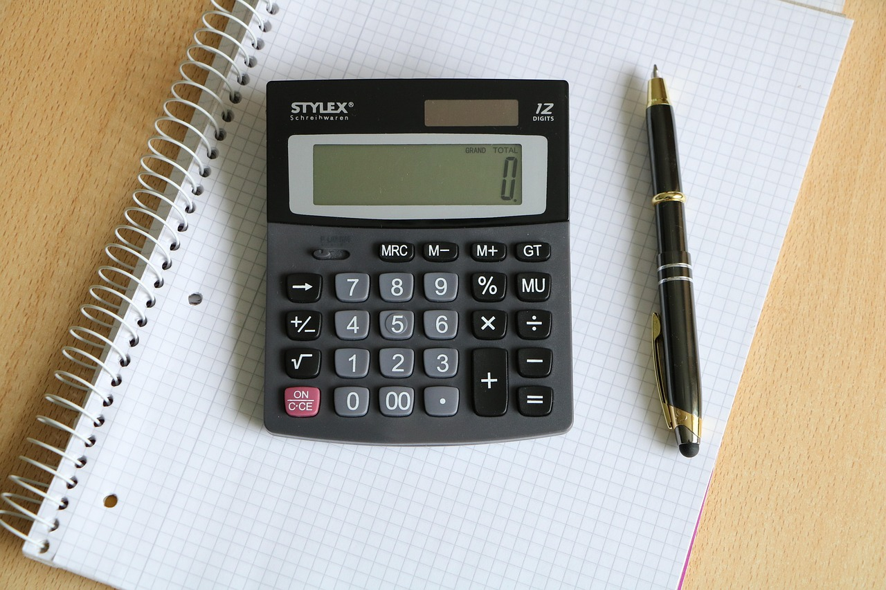

주제 엑셀보다 먼저 배워야 할 숫자 감각 (evergreen / office)
제목 후보
메타 설명 엑셀 함수보다 숫자 감각이 먼저인 이유를 회의실 장면으로 설명한다. 숫자 감각의 정의와 기르는 습관 다섯 가지를 담았다.
라벨 숫자감각, 엑셀, 직장인필수역량, 보고서작성법, 업무스킬, 비즈니스감각, 회의스킬, 데이터해석, 신입사원교육, 직장인자기계발
실용 자산 체크리스트 — '숫자 감각 기르는 법'은 방법을 찾는 검색 의도이므로 바로 실천할 수 있는 훈련 습관을 체크리스트로 제공한다
발행 전 팩트체크
이미지 (Blogger 편집기에 드래그해 넣으세요)

지난 분기 마케팅팀 성과 보고 회의 때 일이다. 입사 1년 차 후배가 엑셀 피벗테이블과 조건부 서식까지 완벽하게 입힌 보고서를 들고 들어왔다. 화면에는 색깔별로 정리된 표가 가득했다. 임원이 한마디 물었다. "그래서 이번 분기 광고비 대비 전환율, 좋아진 거야 나빠진 거야?" 후배는 마우스를 들고 표를 위아래로 스크롤하기 시작했다. 숫자는 다 있는데, 그 숫자가 뭘 말하는지는 찾지 못하고 있었다.
엑셀보다 먼저 배워야 할 숫자 감각은 계산 능력이 아니라 판단 능력이다. 함수를 몇 개 아는지, 피벗테이블을 얼마나 화려하게 만드는지는 두 번째 문제다. 숫자를 보는 순간 "이게 큰 건지 작은 건지, 좋아진 건지 나빠진 건지"를 바로 감지하는 감각이 먼저다. 이 감각이 없으면 엑셀은 숫자를 예쁘게 정리해주는 도구일 뿐, 보고서의 메시지는 만들어주지 않는다.
숫자 감각이란 어떤 숫자를 봤을 때 그것이 전체 맥락에서 큰지 작은지, 늘어난 건지 줄어든 건지를 계산기 없이 가늠하는 능력이다. 전월 대비, 전년 대비, 목표 대비라는 세 개의 기준점 중 하나라도 머릿속에 깔려 있으면 숫자는 저절로 의미를 갖는다. 기준점이 없으면 아무리 많은 숫자를 늘어놓아도 그냥 숫자 더미일 뿐이다.
예를 들어 "이번 달 매출 3억 2천만원"이라는 문장은 그 자체로는 아무 의미가 없다. 전월이 2억 8천만원이었다면 14% 늘어난 거고, 전년 동월이 4억이었다면 20% 줄어든 거다. 같은 숫자, 완전히 다른 이야기다. 숫자 감각이 있는 사람은 숫자를 듣는 순간 "그게 늘어난 거야 줄어든 거야"부터 되묻는다.
숫자 감각과 자주 헷갈리는 말이 숫자 문해력이다. 숫자 문해력이란 표나 그래프를 읽고 그 안의 데이터를 정확히 이해하는 능력을 말한다. 숫자 감각은 거기서 한 걸음 더 나아가 "그 숫자가 좋은 건지 나쁜 건지"를 판단하는 능력이다. 문해력은 읽는 힘이고, 감각은 판단하는 힘이다. 둘은 비슷해 보이지만 회의실에서 쓰이는 방식이 완전히 다르다.
신입 때는 보통 문해력부터 는다. 표를 읽고, 그래프의 추세선을 알아보고, 범례를 이해하는 수준까지는 몇 달이면 도달한다. 문제는 그 다음이다. 문해력만 있는 사람은 "매출이 3억 2천만원이었습니다"까지는 또박또박 말하는데, "그래서 좋은 거예요?"라는 질문 앞에서 멈춘다. 숫자를 읽을 줄은 알아도 그 숫자에 가치 판단을 붙이는 훈련이 안 된 거다. 이 둘을 구분하지 못하면 "나는 숫자를 잘 다룬다"는 착각에 빠지기 쉽다.
신입 교육 때마다 느끼는 게 있다. 엑셀 수식부터 가르치면 숫자 감각이 오히려 늦게 는다. VLOOKUP, 피벗테이블, 조건부 서식을 능숙하게 다루는 후배일수록 "그래서 결론이 뭐야"라는 질문에 약한 경우를 꽤 봤다. 도구가 계산을 대신해주니 머릿속으로 숫자를 굴려볼 일이 없어진 거다.
엑셀을 먼저 배우면 숫자 감각이 더디게 느는 이유는 도구가 사고의 과정을 대신 해주기 때문이다. 함수를 넣으면 답이 뚝 떨어지니 "이 답이 말이 되는 숫자인가"를 검증하는 습관이 생기지 않는다. 화가가 붓을 쥐기 전에 먼저 대상을 보는 눈을 길러야 하듯, 숫자도 도구를 쥐기 전에 크기와 비율을 가늠하는 눈이 먼저 필요하다.
예전에 팀에서 엑셀 자동화 수식을 짜서 보고서 작성 시간을 절반으로 줄인 친구가 있었다. 수식은 완벽했는데, 그 수식이 뽑아낸 숫자에 오류가 있어도 알아채지 못했다. 전월 대비 매출이 300% 늘었다는 결과가 나왔는데, 그게 말이 안 되는 숫자라는 걸 눈치채지 못하고 그대로 보고서에 박아 넣었다. 셀 참조 범위가 하나 밀린 단순한 실수였는데, 숫자 감각이 있었다면 "300%는 말이 안 된다"는 생각이 먼저 들었어야 했다.
회의실에서 이 차이는 생각보다 선명하게 드러난다. 숫자 감각이 없는 사람은 숫자를 '읽는다'. 화면에 뜬 숫자를 그대로 읽고 다음 장으로 넘어간다. 숫자 감각이 있는 사람은 숫자를 '해석한다'. "이 숫자가 전월보다 늘었는데, 비수기인 걸 감안하면 사실상 더 잘한 거다"처럼 숫자 뒤에 맥락을 붙인다.
예전 팀에 매출 목표 대비 달성률을 발표할 때마다 꼭 "그런데 이게 좋은 거예요 나쁜 거예요?"라고 되묻는 팀원이 있었다. 처음엔 답답했는데, 돌아보면 그게 맞는 질문이었다. 숫자 자체보다 그 숫자가 놓인 위치를 묻는 사람이 결국 보고서에서 한 줄 다르게 쓴다. 엑셀 실력은 평균 수준이었지만, 그 친구는 숫자가 나오면 늘 "기준이 뭐예요"부터 물었다. 지금은 그 팀에서 숫자를 제일 잘 읽는 사람으로 통한다.
반대 사례도 있다. 숫자 하나하나를 정확하게 외우고 소수점 둘째 자리까지 틀리지 않는 후배가 있었는데, 그 숫자들을 엮어서 하나의 이야기로 만드는 건 늘 다른 사람 몫이었다. 정확함과 통찰은 다른 영역이라는 걸 그때 확실히 알았다.
신입 때는 숫자를 몰라도 어느 정도 봐준다. 대리, 과장을 거치면서 상황이 달라진다. 팀장 승진 심사 자리에서 흔히 나오는 질문이 "이 사람, 숫자로 설득할 줄 아는가"다. 보고서를 잘 쓰는 것과 숫자로 사람을 움직이는 건 다른 차원의 일이다. 승진 심사를 들여다보면, 결국 숫자 감각이 있는 사람과 없는 사람으로 나뉘는 게 보인다.
흥미로운 건 숫자 감각이 늦게 트인 사람도 꽤 있다는 점이다. 오래 실무만 하다가 어느 순간 "숫자를 보는 눈이 트였다"고 말하는 선배들이 있다. 공통점은 하나다. 어느 순간부터 숫자를 '정리'하는 대신 '질문'하기 시작했다는 것. 숫자 감각은 늦게 트이더라도 한번 생기면 그 뒤로는 빠르게 는다.
숫자 감각은 타고나는 게 아니라 작은 습관이 쌓여서 만들어진다. 화려한 공식이 아니라 매일 숫자를 대하는 태도의 문제다. 아래 다섯 가지는 엑셀을 켜기 전에 먼저 몸에 붙여볼 만한 습관이다.
숫자 감각이 지금 어느 수준인지 궁금하다면 간단한 자가 점검으로 확인할 수 있다. 다음 질문에 3초 안에 답이 떠오르는지 보면 된다. 답이 바로 안 나오고 계산기부터 찾게 된다면, 아직 숫자를 '읽는' 단계에 머물러 있다는 신호다.
이 세 질문에 답이 바로 나오는 사람은 숫자 감각이 이미 몸에 붙은 사람이다. 반대로 매번 표를 다시 열어서 확인해야 한다면, 숫자를 보는 습관부터 바꿔볼 필요가 있다.
숫자 감각이 없으면 당장 큰 사고가 나지는 않는다. 대신 작은 비효율이 계속 쌓인다. 숫자를 해석할 사람이 따로 필요해지고, 보고서 한 장을 두고 회의가 길어지고, 같은 자료를 두 번 세 번 다시 만든다. 이 비용은 눈에 보이지 않아서 아무도 문제라고 지적하지 않는다. 하지만 팀 전체의 의사결정 속도는 분명히 느려진다.
반대로 숫자 감각이 있는 사람 한 명이 팀에 있으면 회의 시간이 눈에 띄게 줄어든다. 자료를 보여주자마자 결론이 따라붙기 때문에, "그래서 뭐가 문제냐"는 질문으로 시간을 허비하지 않는다. 숫자 감각은 개인의 역량이지만, 조직 전체의 속도를 좌우하는 변수이기도 하다.
임원급으로 갈수록 보고서보다 구두 질의를 더 많이 받는다. "그래서 이게 늘어난 거야?"라는 질문에 표를 찾는 사람과 바로 "네, 전월보다 14% 늘었는데 비수기치곤 선방했습니다"라고 답하는 사람은 완전히 다르게 평가받는다. 전자는 '실무자'로 남고, 후자는 '의사결정을 도울 사람'으로 분류된다.
이런 차이가 생기는 이유는 의사결정의 속도 때문이다. 임원은 숫자 자체보다 숫자가 의미하는 방향을 빨리 알고 싶어 한다. 숫자 감각이 있는 사람은 그 방향을 즉석에서 제시할 수 있고, 없는 사람은 자료를 다시 열어봐야 한다. 회의 시간은 한정돼 있고, 그 몇 초 차이가 '신뢰할 수 있는 사람'이라는 인상을 결정한다.
엑셀은 몇 주만 배워도 는다. 숫자 감각은 몇 년을 봐도 안 느는 사람이 있고, 몇 달 만에 눈을 뜨는 사람도 있다. 씁쓸하지만 사실이다. 숫자 감각이 없는 채로 엑셀만 잘하면, 예쁜 표를 만드는 사람으로 남는다. 숫자 뒤의 이야기를 읽어내는 사람이 결국 보고서의 결론을 쓴다.
Q. 회의 중에 숫자를 보여주다가 "그래서 늘어난 거예요 줄어든 거예요"라는 질문에 말문이 막힌 적, 저만 있는 건 아니죠?